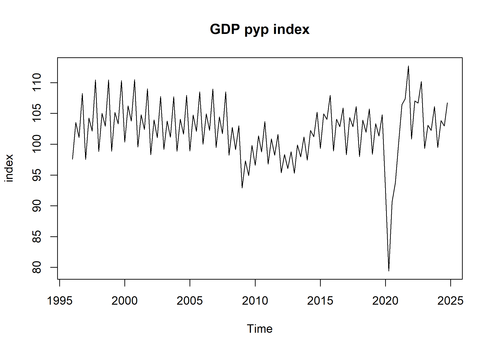
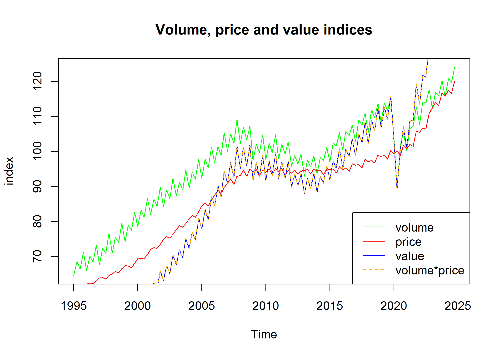

IndexNumberTools intends to ease the everyday work of users and producers of index numbers by providing functionalities like chain-linking, base shifting or computing pyp indices.
Installation
# Install released version from CRAN
install.packages("IndexNumberTools")Getting started
We’ll work through an example using the Spanish GDP in current prices, which is preloaded as gdp_current, and the chain-linked volume (index), gdp_volume.
We can easily re-reference the volume series with change_ref_year().1
gdp_volume_2010 <- change_ref_year(gdp_volume, 2010)#> Time Series:
#> Start = 2008
#> End = 2022
#> Frequency = 1
#> 2020 2010
#> 2008 104.90885 103.81798
#> 2009 100.95573 99.90596
#> 2010 101.05075 100.00000
#> 2011 100.40412 99.36010
#> 2012 97.52742 96.51331
#> 2013 96.13535 95.13571
#> 2014 97.59707 96.58224
#> 2015 101.56035 100.50430
#> 2016 104.52100 103.43417
#> 2017 107.54800 106.42969
#> 2018 110.12422 108.97913
#> 2019 112.28397 111.11642
#> 2020 100.00000 98.96018
#> 2021 106.68315 105.57383
#> 2022 113.27545 112.09758We can also get the series at previous year prices from gdp_volume with get_pyp().2
gdp_pyp <- get_pyp(gdp_volume)
Multiplying the volume series by the mean of the current prices series at the reference year (2020), we obtain the GDP in (chain-linked) constant prices.
ref_year_mean <- window(gdp_current,start = c(2020,1), end = c(2020,4)) |> mean()
gdp_constant <- ref_year_mean * gdp_volume / 100By dividing the GDP in current prices by the GDP in constant prices, we derive the chain-linked implicit deflator of the GDP.
gdp_deflator <- gdp_current / gdp_constant * 100Using get_v_index() and chain-linking the result with get_chain_linked(), we get the chain-linked value indices.
gdp_value <- get_v_index(gdp_current) |> get_chain_linked(2020)Then, we can verify the identity , that is, the value index must equal the product of the price and volume indices.
